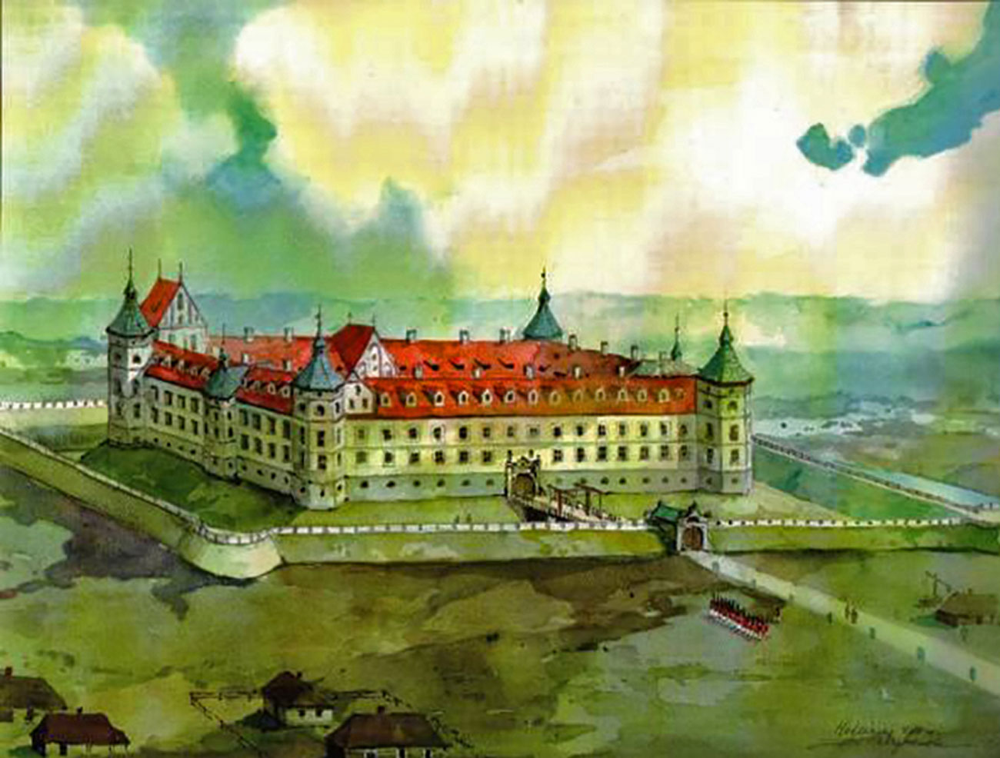
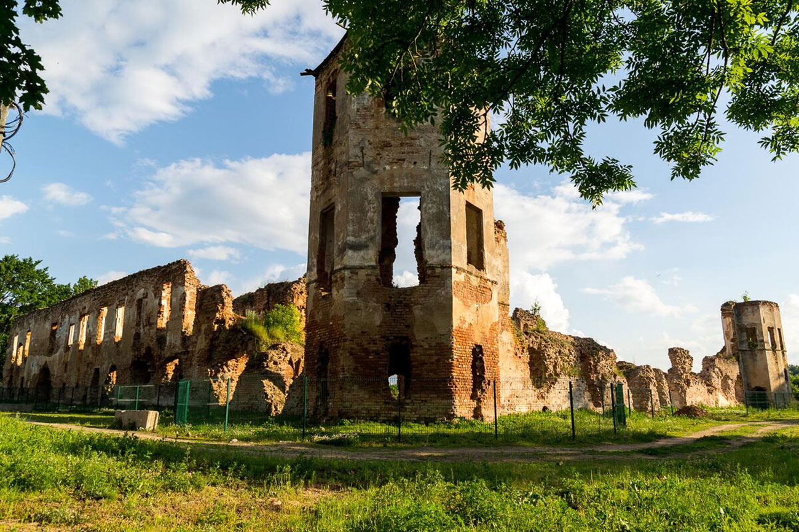
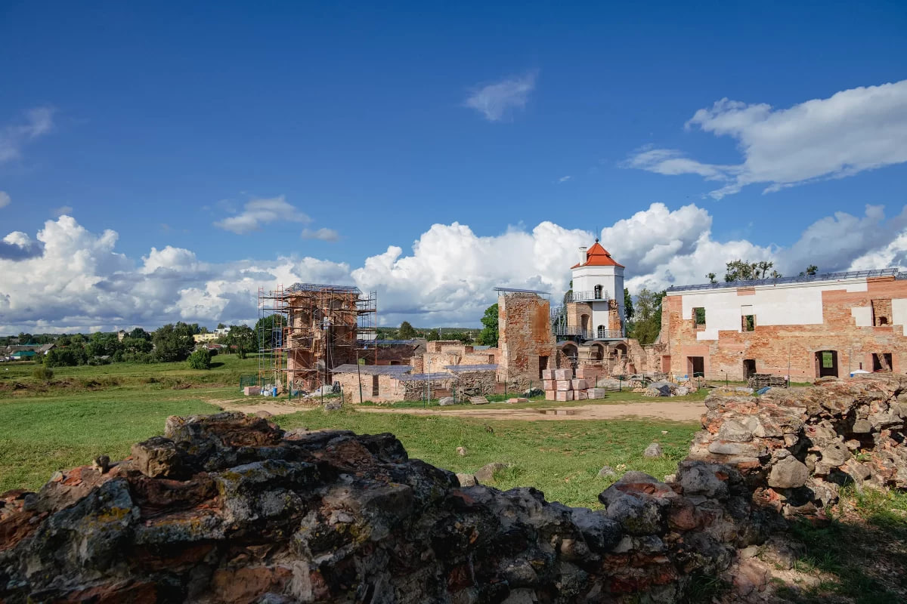
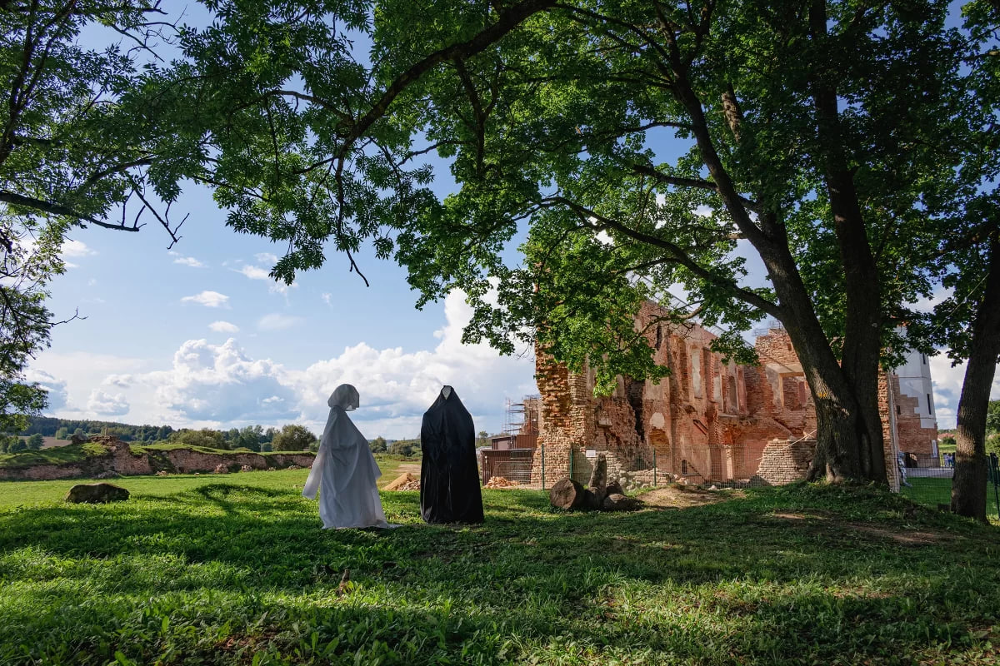
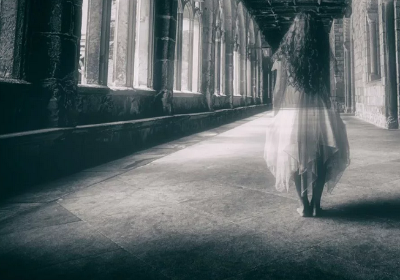

Замок был возведен в начале 17-го века в местечке Гольшаны и служил дворцовой резиденцией Павла Стефана Сапеги, подканцлера Великого княжества Литовского. Его роду это имение досталось в начале 16-го века как приданое последней княжны Гольшанской.
Сначала Гольшанский замок возводили как фортецию, а уже затем, как богатую резиденцию магната. В окончательном варианте это был пышный дворец с парадными залами, украшенными фресками, с кафельными печами, каминами и полами из керамической плитки. По форме он был замкнутым прямоугольником с угловыми шестигранными башнями.
Однако замок сильно пострадал во время северной войны 1701-1721 года между Россией и Швецией, постепенно начал приходить в упадок и разрушаться. Во второй половине XIX века состояние замка в газетах описывалось как плачевное. Уже не было третьего этажа, комнаты были захламлены, а о былом величии напоминали разве что следы потолочных росписей, да портрет одного из князей. Тогда же стены замка стали разбирать на кирпичи.
Лишь в 2018 году разрушенный замок начали возрождать. Восстановили Северную башню, сделали несколько смотровых площадок над развалинами Гольшанского замка.
Хотя значительная часть старинного замка по-прежнему лежит в руинах, он притягивает множество туристов своей атмосферой и остатками былого величия. В восстановленной башне оборудована смотровая площадка и небольшой музей, посвященный истории замка.
Замок в Гольшанах отдаленно напоминал Мирский, но превосходил его размерами. Он представлял собой четырехугольник размерами примерно 90 ? 95 метров. По углам находились шестигранные башни. А трехэтажные жилые корпуса располагались вдоль крепостных стен. Таким образом в центре крепости расположился квадратный внутренний двор со стороной 60 метров.
Хотя Гольшанский замок строился как фортеция, своим роскошным убранством он больше напоминал дворец. Его парадные залы были украшены фресками, лепниной, каминами и кафельными печами, а полы были выложены керамической плиткой. Имелась часовня, встроенная в жилой корпус, а на территории замка было три пруда, дно которых тоже было укреплено плиткой.
Внутри замка имелась обширная библиотека, собрание произведений искусства и коллекции оружия. Была оборудована отопительная система, водопровод и канализация. Даже его башни не несли оборонительной функции, а использовались как жилые покои. Для защиты замка служили заполненные водой рвы и земляные укрепления.
|  |
На протяжении нескольких сотен лет жители прилегавших к замку земель рассказывали легенду о местном призраке черного монаха. По преданию, призрачной тенью после смерти стал Гремислав Валюжинич – выходец из простого народа. Юноше удалось завоевать сердце княжны Ганны-Гордиславы Гольшанской. Встречаться на людях влюбленные не могли, поэтому каждую ночь Гремислав, облачившись в монашеские одежды, пробирался в замок. Долго скрывать свои тайные встречи влюбленным не удалось. Отец княжны узнал о постыдном романе своей дочери с простолюдином и приказал замуровать юношу в стене замка. Что было дальше с княжной, легенда умалчивает. А вот душа юноши, как утверждают рассказчики, так и не нашла покой, и его призрак остался среди руин замка, где он был так несправедливо убит. С тех пор многие гольшанцы говорят, что видели призрак Чёрного монаха, обходящего по ночам руины замка. |
|  |
Когда вблизи Гольшанского замка шло возведение монастыря, закончить строительство плотникам все никак не удавалось – постоянно обрушивалась одна из стен. Никакие ухищрения и уловки не помогали, и строители решили пойти на крайние меры. В то время считалось, что закрепить стену можно только одним способом: поместив в нее человеческие останки. Было принято решение пожертвовать жизнью одной из женщин, что первая появится на стройке. Трагичная судьба ожидала жену одного из плотников. Молодая пара обручилась совсем недавно, и девушка спешила первой принести любимому супругу горячий обед. После этого работа пошла на лад и монастырь был достроен. А вот душа женщины до сих пор бродит по монастырю и руинам Гольшанского замка в виде Белой Дамы (Белой Пани). Белая Дама недолюбливает мужчин, ведь именно они предрешили ее участь. Каждый из них, повидавшись с нею ночью, рискует выйти на утро изрядно поседевшим. По свидетельствам очевидцев, несчастный попадает в некую зону, лишенную законов гравитации. Обливаясь холодным потом, он может целую ночь бегать по помещениям, спасаясь от жуткого наваждения, но так и не найти выхода. При этом ориентация в пространстве потеряна – многие утверждают, что бегали по потолку. |